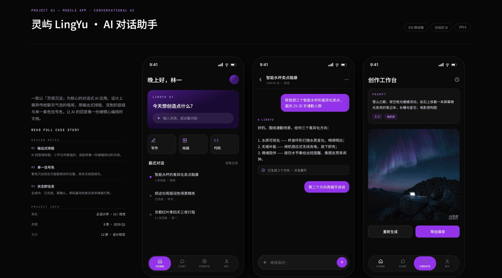
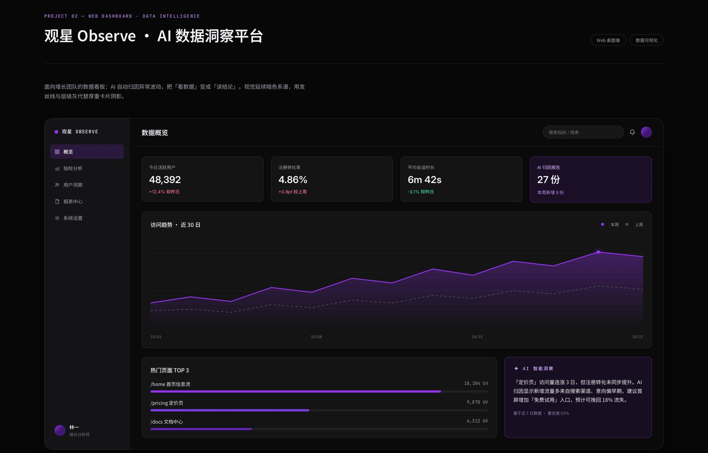
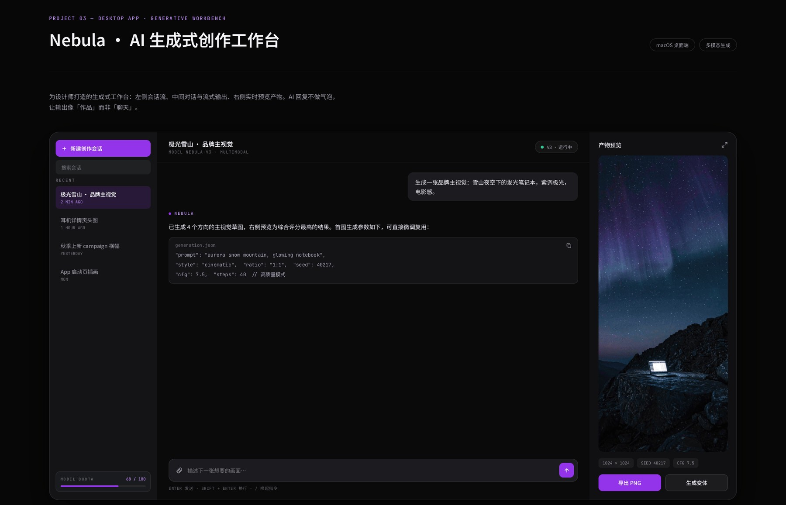

01
灵屿 LingYu · AI 对话助手
iOS 移动端 · 对话式 AI · 2026一款以「灵感沉淀」为核心的对话式 AI 应用。设计上刻意避开聊天软件的泡泡感: AI 的回答用输出式排版呈现——标题、小节、列表分好层级,读起来像一份被编好的文档; 紫色只出现在与智能相关的位置,其余交给层级灰。

02
观星 Observe · AI 数据洞察平台
Web 桌面端 · 数据可视化面向增长团队的数据看板。AI 自动归因异常波动,把「看数据」变成「读结论」—— 除了常规的趋势与排名,右侧多一块「AI 智能洞察」,直接给出原因假设与可执行建议。 视觉延续暗色系谱,用发丝线与层级灰代替厚重卡片阴影。

03
Nebula · AI 生成式创作工作台
macOS 桌面端 · 多模态生成为设计师打造的生成式工作台。三栏结构把对话、生成参数与产物预览放在同一屏: 左边是会话与历史,中间是对话与流式输出,右边是实时预览。 生成结果不包成聊天泡泡,而是直接摊开参数与产物,让输出像「作品」而非「聊天」。

视觉系统
三个产品共用一套变量。底色压到近黑，让界面本身退到后面； 紫色作为唯一信号色，只标记「这是 AI 在说话」的位置，其余全部交给灰度层级。
底色
#070708 近黑,不纯黑——留一点余地方便分辨层级。
信号色
#9333EA 唯一的高饱和色,只用于智能相关元素:AI 消息、生成按钮、当前状态。
字体
Inter（数字与西文）· Noto Sans SC（中文）· JetBrains Mono（标签与参数）。
分隔
1px 发丝线代替卡片阴影,配合编辑档案式的排版节奏。